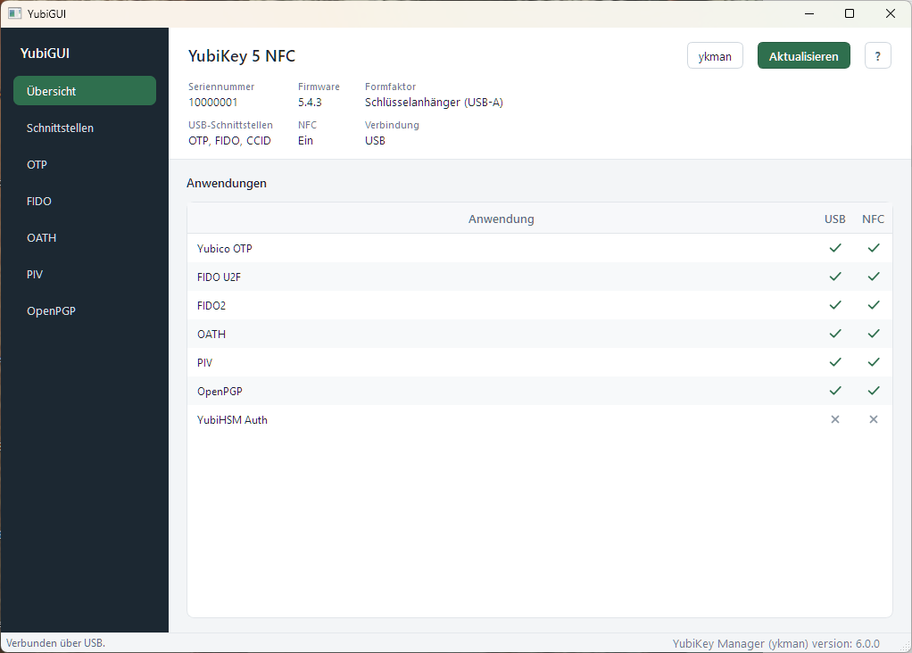

Übersicht
Die Übersicht listet die Anwendungen auf dem Key. Ein Häkchen heißt eingeschaltet, ein Kreuz ausgeschaltet. Das gilt für USB und, wenn der Key NFC hat, auch für NFC. Der Inhalt einer Anwendung steht auf ihrer eigenen Seite.

YubiHSM Auth erscheint nur als Zeile. Diese Anwendung wird nicht bedient. Die Schalter zum Ändern stehen unter Schnittstellen.
Liegt der Key auf einem Lesegerät, steht unter Verbindung Lesegerät. Fehlt der Key, wartet das Fenster und bittet, ihn einzustecken oder auf das Lesegerät zu legen. Mehrere Keys wählt man über die Seriennummer. Es wird immer genau ein Gerät bearbeitet.